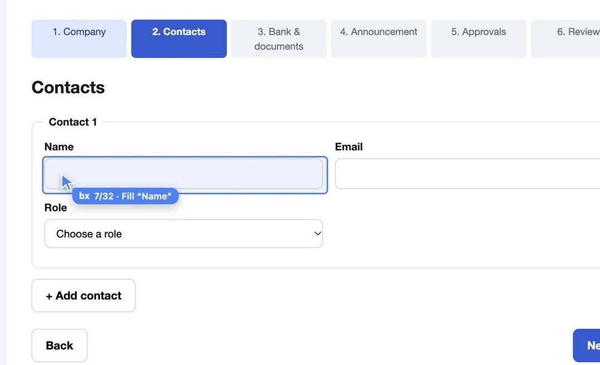

Like docker exec, but the container is your browser.
docker exec runs a command inside a container that's already running. bx does the same for the browser you already have open. It doesn't launch a clean headless copy. It attaches to your Brave or Chrome, picks the profile you name, and runs the agent's commands there.
# run a command inside it
docker exec -it api sh
Same filesystem, same env, same state as the running process.
# the agent calls bx tools open staging.acme.dev profile=Work click e25 network --errors
Same cookies, same sessions, same SSO as your own tabs. Nothing to log in to again.
Your agent
calls bx as an MCP server
bx
holds one DevTools connection per browser, shared by every session. You click Allow once.
Your browser
the profile you name, signed in
A silent checkout bug, found in 33 seconds.
A real run: Claude with only the bx MCP, in Brave, on a demo store where Place order does nothing. The browser in the video is that run's recording, with bx's pointer; every call and result came from it.
Everyday errands, recorded from real runs.
Each one is a single prompt to Claude with bx, recorded with bx record in watch mode: the agent's real tool calls on the left, the browser with bx's pointer on the right. Pauses while the model thinks are shortened. Private data is blurred; nothing was sent, submitted or bought.
For anything that needs you signed in.
A fresh headless browser can't get past your SSO. Your own profile already has.
clickconsolenetworkReproduce a bug behind a login
The agent does the steps in your session, then reads the exception with its file and line and the failing request's response body.
checkout fails on staging, find out why
emulateperformanceTest a page on a slow phone
390×844 on slow 3G with a 4× slower CPU, reloaded and measured: LCP, CLS, long tasks and the slowest resources, each rated.
how does the dashboard load on a phone on 3G?
storageevalInspect the app's state
Cookies, localStorage and sessionStorage for the current page, so "why am I logged out" or "which flag is on" gets a real answer.
which feature flags does my session have?
snapshotfillreadWork in consoles you're signed in to
Read a cloud console, fill a form, pull a report. bx tells the agent to ask you before it submits, sends, buys or deletes.
list the failing jobs in our CI dashboard
Watch it work, or let it run.
bx has two modes. Both use the same browser, profiles and logins, open tabs in front, and send real mouse and keyboard events, which a page can't tell from yours. In both, a pointer tagged "bx" shows where it's acting and says what it's doing, or that it's waiting for the agent.
Fast mode BX_MODE=fast
- The pointer jumps to each element and says what it's doing.
- No pacing: each step runs as soon as the page settles.
- Text is pasted in one go.
- Same logins, same profiles, same tools.
Watch mode BX_MODE=watch
- The pointer glides to each element, and the real mouse travels with it.
- In a batch, the tag shows the step it's on, such as 7/32.
- Human pace: the mouse travels to what it clicks, and dropdowns open to the choice.

Just ask your agent. "Let me watch", "go slowly", "this site ignores pasted text": the agent sets the mode for that task through bx's start tool. Nothing to configure.
| Default | For power users: what bx does when the agent doesn't say |
|---|---|
BX_MODE | fast (default) or watch. |
BX_TYPING | paste (default) puts text in at once, as a paste does. keys types key by key, for sites that react only to key presses. |
BX_BROWSER | Which browser: brave, chrome, or brave-agent for the separate one launch starts. |
Set these where your agent starts bx, then restart the agent. What an agent asks for in start wins, and each agent session keeps its own settings.
Fewer calls on multi-step forms.
On a 6-step vendor onboarding form (a shadow-DOM bank form, a PDF upload, an approval), the same agent needed a median of 24 tool calls with bx against 62 with Playwright MCP: batch fills a whole step in one call. All runs of both finished the task.
| bx | Playwright MCP | Chrome DevTools MCP | |
|---|---|---|---|
| MCP server memory | 29 MB (about 95 MB started through npx) | 251 MB | 290 MB |
| Your logged-in browser | Yes: the profile you name, one Allow click | Through a browser extension, or a browser started with a debugging port | Through remote debugging on Chrome 144+ |
| Browser download | None: uses the Chromium browser you have | None if Chrome or Edge is installed | None, needs Chrome |
Ask what it did. Get the whole session.
bx logs every action on your machine, one file per agent session. Inside Claude Code or Codex that's the app's own conversation, so you can jump back to it. Ask your agent "what did bx do in my last session?" and it calls history, which draws the session from start to end: each task, the pages it worked on, and every action with its result.
bx-4c1e9a07d2f3 claude-code bx Nov 14 13:00:29-13:01:02 "Read example.com" 4 actions, 2 failed resume: claude --resume 1b6e2c90-5a4d-4f1e-9c3b-7d8a2e6f0b14 ├─ "Read example.com" 13:00:29-13:00:32 3 actions, 1 failed done: "Followed the link" │ ├─ Personal example.com/ │ │ ├─ 13:00:29 open https://example.com ok 413ms │ │ └─ 13:00:29 click a ok 364ms -> iana.org/help/example-domains │ └─ Personal iana.org/help/example-domains │ └─ 13:00:30 fill #nope FAILED: no visible element matches "#nope" └─ (untitled) 13:00:32-13:01:02 1 action └─ Personal iana.org/help/example-domains └─ 13:00:32 goto back ok 236ms -> example.com/
| What's logged | |
|---|---|
| Logged | Time, browser, profile, the page it acted on and where it led, the action and its target, the result and how long it took. |
| Left out | What was typed, and what links carry. A fill shows the field, never the value; typed text and scripts show only their length. URLs are logged without the part after ?, where sign-in codes and reset tokens travel, and without a # part holding tokens such as #access_token=. bx config set log.values full logs values for debugging, off logs nothing. Only you can change this, never the agent. |
| Where | Only on your Mac, readable only by you. Nothing is sent anywhere. |
| Pin it | "Pin that as Onboard vendor" saves the task. Later, "do the Onboard vendor pin for Lumen" and the agent follows its steps page by page, asking you only for the values. Elements are logged by name, button "Next", so the steps still make sense next month. Pins are never deleted. |
| How long it's kept | |
|---|---|
| Why size, not age | One action is about 285 bytes. An agent doing 2,000 actions a day writes about 210 MB a year, so 2 GB lasts around ten years. An age limit would only throw history away, so logs are kept until they get big, not until they get old. |
| Recent | Plain files, up to 2 GB in total, about 7.5 million actions. |
| Older | Past 2 GB, the oldest sessions are gzipped, about ten times smaller, up to 5 GB. history reads them as they are. |
| Expiry | Past the 5 GB, the oldest archived sessions are deleted. That only stops a runaway agent from filling the disk. |
| Change it | bx config set log.days 90 makes history expire; log.max and log.archive_max take sizes. Agents can raise these, only you can lower them. |
Three steps, once per browser.
Install the plugin
Claude Code and Codex: the command at the top. It brings the MCP server and the skill, and updates with the plugin manager. Claude Desktop and Cursor: run npx -y @facets-cloud/bx mcp install. Any other MCP app: npx -y @facets-cloud/bx mcp.
Turn on remote debugging
It's off by default. Open this page in your browser and switch it on.
brave://inspectchrome://inspectedge://inspectvivaldi://inspectClick Allow, once
The browser asks before bx connects. bx keeps that connection in a small background process, so every session and app shares it until the browser quits.
DevToolsActivePort and Local State in the browser's folder, and macOS 27 blocks that otherwise. Rather not? The launch tool starts a separate copy of the browser that needs neither Full Disk Access nor the Allow click.Everything you'd do by hand, plus DevTools.
The agent snapshots a tab and gets a ref like e12 for each element, or names one the way the snapshot shows it: button "Next". Actions report what changed on the page, and batch runs a whole plan in one call, across screens it hasn't seen yet.
Setup 5
- doctor
- list_browsers
- setup
- launch
- settings
Read 9
- list_profiles
- list_tabs
- snapshot
- read
- screenshot
- eval
- wait
- history
- pins
Act 14
- open
- goto
- click
- hover
- drag
- fill
- type
- key
- upload
- dialog
- close_tab
- batch
- start
- done
Debug 6
- console
- network
- storage
- performance
- emulate
- cdp
It acts as you. Plan for that.
Your session is the point
The agent can read any page and act on any site you're signed in to in that profile. Asking before risky actions is its judgment, not a hard limit.
Fence it with a profile
Point it at a separate profile, or the launch browser with its own logins, for anything it shouldn't touch.
See what it does
bx works in tabs in front of you, and a "bx" pointer shows every action as it happens. Set BX_MODE=watch to slow it to human pace.
One command to add it, or paste one prompt into your agent and let it set bx up.